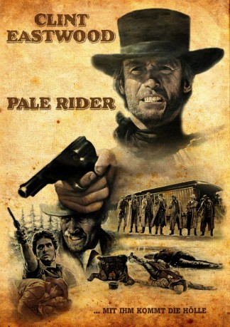

#2279 Pale Rider - Der namenlose Reiter
Alternativ: Pale Rider
 
 IMDB-Wertung: 7.3 / 10
IMDB-Wertung: 7.3 / 10  Metascore: 61
Metascore: 61 
Ein namenloser Prediger hilft einer Gruppe von friedfertigen Goldschürfern, die von einem brutalen Minenunternehmer erpresst werden. Regisseur und Hauptdarsteller Clint Eastwood schlüpft in diesem Spätwestern aus dem Jahr 1985 erneut in seine Paraderolle als wortkarger, geheimnisumwobener Revolverheld.
Jahr: 1985
Dauer: 115 Minuten
FSK: 16
Land: USA Studio: Warner Bros.Tonspuren: DD5.1 - ,
Untertitel: Deutsch, Englisch,
Auflösung: 1080p (1920x816) Größe: 8140 MB
Genre: Western
Regisseur:  Clint Eastwood
Clint Eastwood
Drehbuch: Michael Butler, Dennis Shryack
Soundtrack: Lennie Niehaus
Darsteller:
Datei: X:\HD-Western-1980-1999\Pale Rider - Der namenlose Reiter (1985, FSK16, 1920x816).mkv seit 26.10.2015
Festplatte: HD Eastern+Western
 Es gibt insgesamt 29 Filme in der Gruppe 'HD-Western-1980-1999'
Es gibt insgesamt 29 Filme in der Gruppe 'HD-Western-1980-1999'